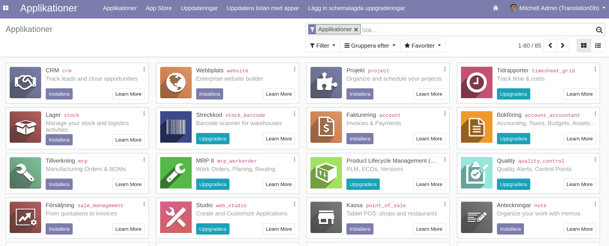
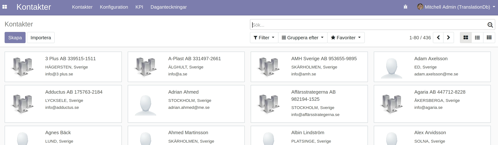
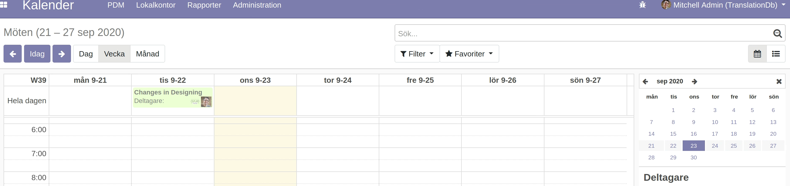
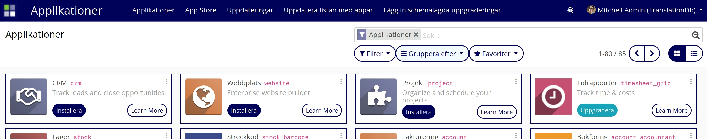
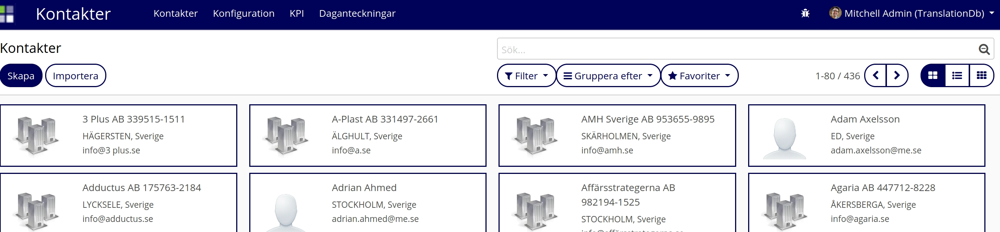
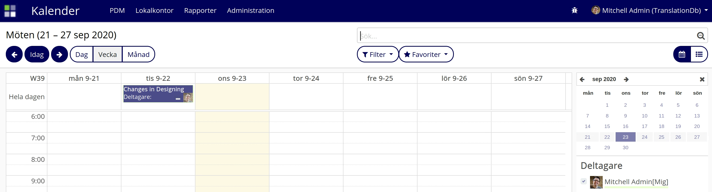

AF Backend Tema: Denna modul sköter bakgrunden för applikationerna.
Innan AF backend tema modulen är installerad ser applikationerna enligt nedan, ljusare bakgrundsfärg



När AF backend tema modulen är installerad ser vi enligt nedan hur bakgrundsfärgen ändras och blir mörkare, byter kontrast på vy väljaren och lägger till högre kontrast kring kanban korten.


